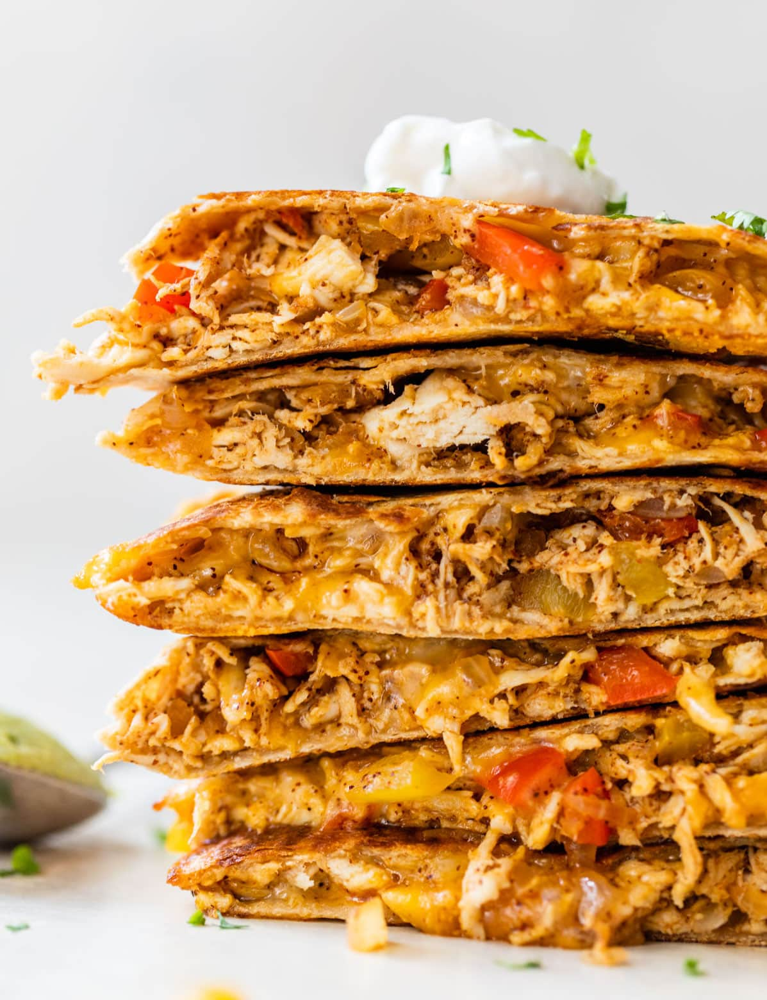

Chicken Quesadillas

Description
A plain cheese quesadilla of the white tortilla + prebagged cheese + microwave-until-melted variety can be made a bit of a joke when describing someone’s ability to “cook,” but this juicy chicken quesadilla is well-above basic.
Sauteed, seasoned chicken thighs (or chicken breasts if that’s your preference), fajita-style vegetables, and yes CHEESE make this the best chicken quesadilla recipe.
Ingredients
- Chicken. Tender, protein-packed chicken breast (or thighs) helps make this quesadilla filling, flavorful, and nutritious. Chicken is rich in iron and minerals. Want more Tex-Mex chicken?
- Cheese. The gooey, cheesy inside is a large part of what makes this quesadilla so wonderful. It helps hold the filling together and tastes absolutely scrumptious.
- Veggies. To make this chicken quesadilla healthy, I packed it with delicious veggies. Bell peppers and onions add flavor, vitamins, and antioxidants.
- Spices. Chili powder, salt, and garlic powder add just the right amount of flavor to the quesadilla. (Short on time? You can swap taco seasoning.)
- Whole Wheat Tortilla. Whole wheat tortillas have more fiber than regular tortillas, making them a healthier alternative. They crisp up just as well and taste delish! Use the burrito size and fold it in half, or you can layer two smaller tortillas with the filling in the center.
- Toppings. Salsa, guacamole, queso, and sour cream (plain Greek yogurt works well too) are our go-to toppings. You could also add pico de gallo, fresh cilantro, or shredded lettuce.
Steps
- Add the chicken to a bowl, then stir in half of the spices.
- Sauté the vegetables with spices.
- Assemble the quesadillas by piling the fillings onto one half of a tortilla.
- Fold the empty tortilla half over the top. Repeat.
- Cook the quesadillas two at a time in a skillet.
- Flip after about 4 minutes, cooking on the other side for a few minutes. Let cool, slice, and DIG IN!